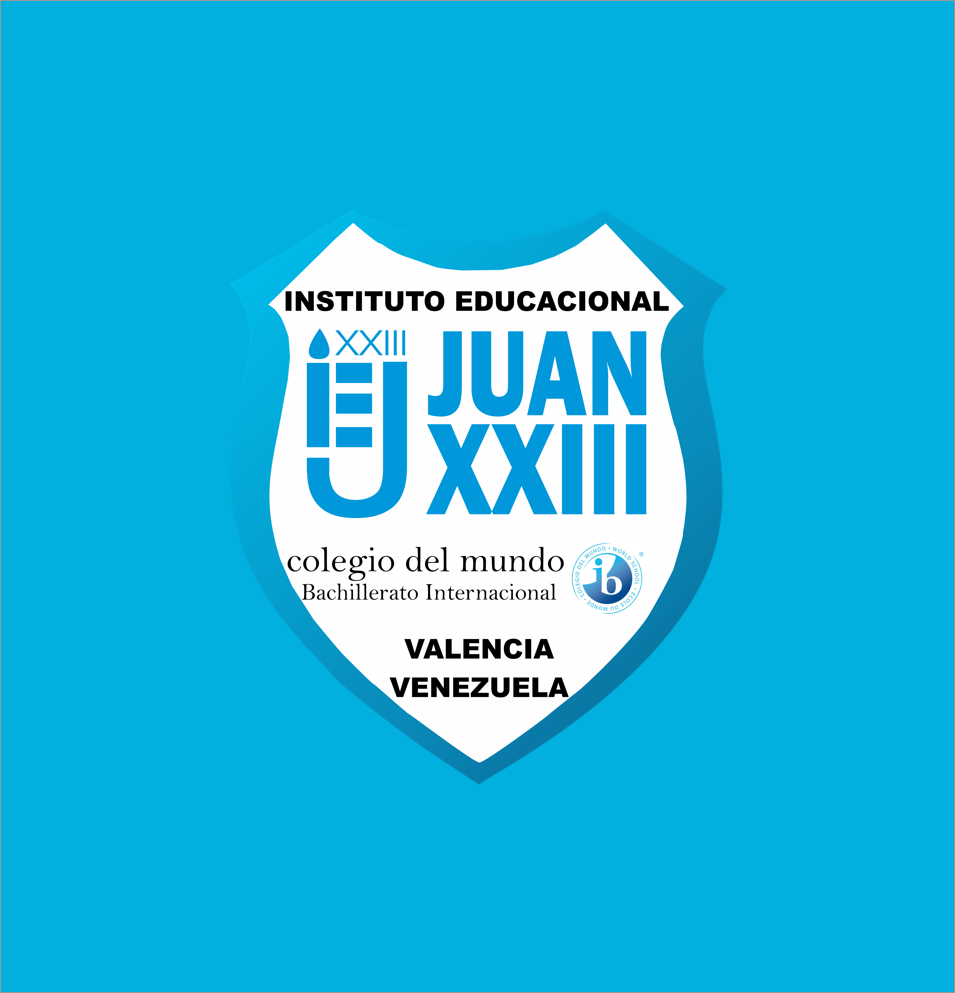

Aquí podrás descargar el álbum oficial producido por estudiantes participantes en las actividades musicales del colegio.
Lista de canciones

- Accidentally In Love, por la Banda Alternativa
- Noches Vacías, por la Banda Alternativa
- La Viquina, por la Estudiantina
- Natalia, por la Estudiantina
- Himno del Instituto Educacional Juan XXIII, por la Coral
- Brujería, por el Grupo de Cuerdas
- Accidentally In Love, por la Banda Alternativa
- Noches Vacías, por la Banda Alternativa
- La Viquina, por la Estudiantina
- Natalia, por la Estudiantina
- Himno del Instituto Educacional Juan XXIII, por la Coral
- Brujería, por el Grupo de Cuerdas
Datos bancarios
Para descargar el disco completo, te pedimos que realices una colaboración de 100 Bs. F. destinada al soporte de las actividades de Creatividad, Acción y Servicio del próximo año escolar.
Por favor, realiza tu depósito o transferencia al número de cuenta 0105-0094-01-10000000.